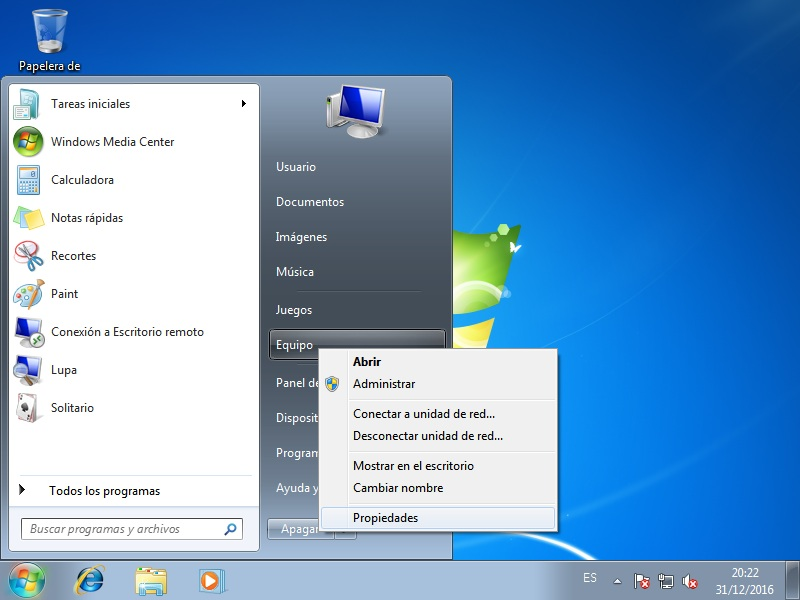
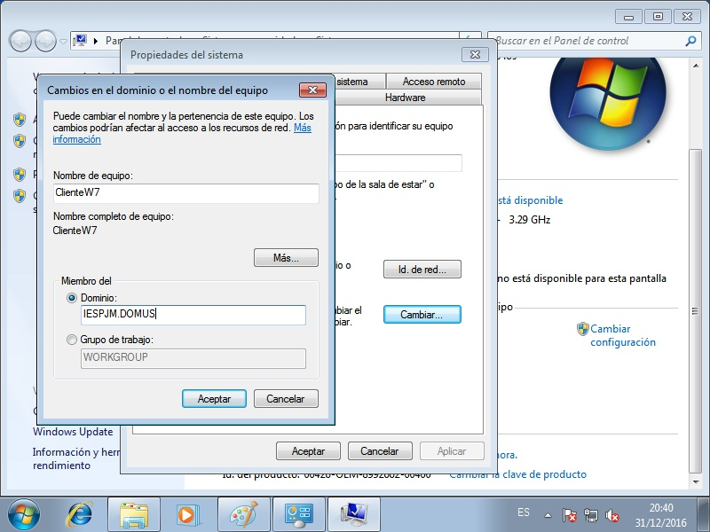
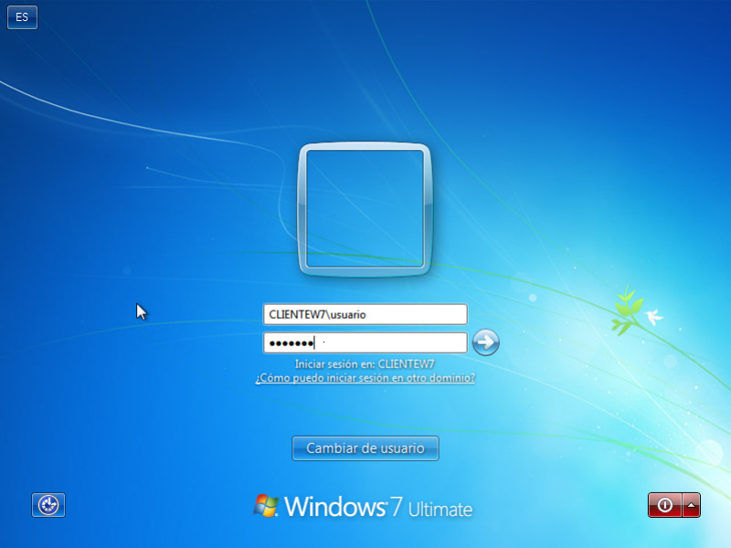

6.4.2.3. Clientes¶
Configurado el servidor, toca ver cómo añadir clientes al dominio. Dependiendo del sistema operativo del cliente, deberemos actuar.
Advertencia
Recuérdese que nuestro servidor lo hemos hecho participar en dos
redes y que es controlador de dominio en la 192.168.255.0/24. Por
tanto, cualquier cliente que queramos añadir deberá pertenecer a esta red.
Advertencia
Es conveniente configurar el servidor como un cliente linux, lo que implica configurar para él sssd y PAM, tal como se hace en el cliente. Para lo primero siga esta guía justamente a partir de cuando se crea el keytab de la máquina y para lo segundo siga lo indicado para la configuración de los perfiles móviles en linux.
Advertencia
Los clientes deben tener sincronizada su hora con el servidor.
6.4.2.3.1. Linux¶
Antes de empezar, es indispensable hacer varias cosas:
Configurar el nombre del equipo (hostname) y el dominio tal como ya hicimos en el servidor. Denominaremos a este cliente clienteL.
Asegurarnos de que el servidor de nombres del cliente es el controlador del dominio, cosa que así será si recibe ip de forma dinámica.
Sincronizar su hora con el controlador de dominio. Para ello, o bien, instalamos otr servidor de hora en el cliente y lo configuramos para que se sincronice con
dc, o bien, instalamos el cliente de hora ntpdate y nos aseguramos que usará el controlador de dominio como servidor y que durante el arranque del sistema se realiza una sincronización.
Para permitir que el cliente acceda a los usuarios del controlador de dominio
usaremos sssd con el provisor ad que exige que la máquina sea miembro del
dominio y se disponga de un fichero /etc/krb5.keytab. Existen otras
alternativas, que no requieron esto1.
Instalemos lo necesario:
# apt-get install samba krb5-user smbclient sssd
Por hacer
Asegurarse de que no se necesita winbind en el cliente.
Y paramos los servicios de samba:
# invoke-rc.d smbd stop
# invoke-rc.d nmbd stop
para configurar como miembro del dominio este equipo creando un
/etc/samba/smb.conf mínimo así:
[global]
workgroup = IESPJM
client signing = yes
client use spnego = yes
kerberos method = secrets and keytab
realm = IESPJM.DOMUS
security = ads
Ahora reiniciamos un par de servicios:
# invoke-rc.d smbd start
# invoke-rc.d nmbd start
Y, pidiendo las credenciales del administrador:
# kinit Administrator@IESPJM.DOMUS
Añadimos el equipo al dominio:
# net ads join -k
Joined 'CLIENTEL' to dns domain 'iespjm.domus'
Finalmente creemos un fichero /etc/krb5.keytab que usará el demonio
sssd, encargado de posibilitar el uso de usuarios y grupos definidos en el
servidor:
# net ads keytab create -k
Nota
Si se está creando la keytab en el propio controlador debe hacer lo siguiente:
# samba-tool domain exportkeytab /etc/krb5.keytab --principal=DC$
donde DC es el nombre que se le ha dado al controlador de domino.
Por último, es necesario que el cliente reconozca los usuarios definidos en el
servidor. Para ello hay que influir en PAM (que es el servicio que permite la
autenticación) y nss que permite reconocer los usuarios y obtener sus
propiedades (uid, etc.). La instalación de sssd facilita esto y. de hecho,
si se echa un vistazo a /etc/nsswitch.conf y se ejecuta
pam-auth-update, se comprobará que el instalador de paquetes ya se ha
encargado de añadir sss a su configuración. Lo único que queda es crear una
configuración a este demonio a través de /etc/sssd/sssd.conf. Para esta
configuración tenemos dos alternativas:
Que los usuarios tengan definido en el propio directorio de samba su UID y el GID de su grupo principal para lo cual podemos hacer esto:
[sssd] services = nss, pam config_file_version = 2 domains = IESPJM.DOMUS # Sustituye el espacio en los nombres de # usuarios y grupos por lo indicado override_space = _ [nss] # Si no hay definida shell en el directorio default_shell = /bin/bash # Si se quiere fijar un valor para el directorio personal # %H es el valor de homedir_subtring ("/home", por defecto) # %u es el nombre de usuario. fallback_homedir = %H/samba/%u [domain/IESPJM.DOMUS] id_provider = ad access_provider = ad auth_provider = ad chpass_provider = ad # El atributo que se usará como información gecos. ldap_user_gecos = displayName # Se filtrará todo usuario # con UID fuera del rango min_id = 1500 max_id = 10000 ldap_id_mapping = False # Permite mostrar todos los usuarios del # directorio activo al hacer un "getent passwd" # No es recomendable habitarlo, por motivos de rendimiento #enumerate True
Hemos fijado que los usuarios que adminitiremos son aquellos que tiene UID entre 1500 y 10000. Cualquier usuario de samba cuyo UID exceda estos límies, simplemente, no existirá para el cliente.
Que no se encuentre ese dato en el directorio y que sssd genere una traducción partiendo del SID (el número de identificación que se usa en windows para usuarios y grupos). Para ello basta sustituir la línea:
ldap_id_mapping = Falsepor estas otras:
# sssd traducirá el SID del usuario o grupo # a un UID o GID de UNIX. Se obliga a que este # número esté entre 1500 y 10000. ldap_id_mapping = True ldap_idmap_range_min = 1500 ldap_idmap_range_max = 10000 ldap_idmap_range_size = 8500
obsérvese que estos límites coinciden con min_id y max_id.
Nota
En el presente documento usaremos esto segundo.
Advertencia
Si se arranco el servicio con un método y después se cambia al otro, es necesario parar el servicio, cambiar la configuración y, antes de de reiniciar, borrar las base de datos que crea sssd:
# rm -f /var/lib/sss/db/*
Una vez creada la configuración, puede arrancarse el servidor:
# invoke-rc.d sssd start
Nota
sssd usa una caché que almacena los usuarios del directorio activo que se acreditan, lo que le permite autenticar a un usuario cacheado, aunque el controlador esté caído. Sin embargo, esto puede impidir que, si se realiza un cambio en el servidor, el cliente lo refleje. Para borrar la caché es necesario ejecutar la orden (del paquete sssd-tools):
# sss_cache -E
Tras todo esto, tendremos un cliente linux que es miembro del dominio y que es capaz de reconocer los usuarios que se creen en el servidor.
Nota
Para completar la configuración del cliente linux, si se desean perfiles móviles, aun falta por configurar estos.
6.4.2.3.2. Windows¶
La condición fundamental para poder añadir el sistema al dominio es que el servidor DNS de la máquina sea el controlador de dominio. Si la red de pruebas es la que se ha sugerido aquí y se recibe ip dinámica, debería ser así. No obstante, se puede comprobar abriendo una consola y comprobando la configuración:
C:> ipconfig /all
En cualquier caso, no es muy complicado configurar los servidores DNS y se presupondrá que el lector sabe hacerlo.
La adición al dominio es sumamente sencilla, elegir en el menú contextual de Equipo el ítem Propiedades:
y en la ventana emergente escoger Cambiar configuración, tras lo cual se escogerá cambiar el nombre que dará paso a una ventana en la que podemos escoger el nombre del equipo (ClienteW) y el dominio en el que queremos ingresar:
Se nos pedirá qe nos acreditemos como algún usuario del dominio con tal poder (Administrator) y tras poco se nos informará de que se nos ha agregado al dominio y deberemos reiniciar el sistema. A partir de este momento podremos entrar en el equipo tanto con la cuenta local que se usó en la instalación como con cualquier otra cuenta del dominio. Ahora bien, cuando se introduce un nombre de usuario a secas, se sobrentiende que es un nombre de usuario del dominio y estará definido en el controlador dicho de otro modo Administrador equivale a IESPJM\Administrator. En cambio, si se quiere acceder a una cuenta local, deberá añadirse antes el nombre de la propia máquina (CLIENTEW7\usuario, por ejemplo):
Enlaces de interés
Notas al pie
- 1
Por ejemplo, sssd con el provisior LDAP que aprovecha que el directorioa activo es compatible con LDAP, o libpam-ldapd y libnss-ldapd con nslcd.